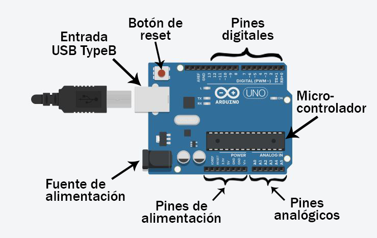
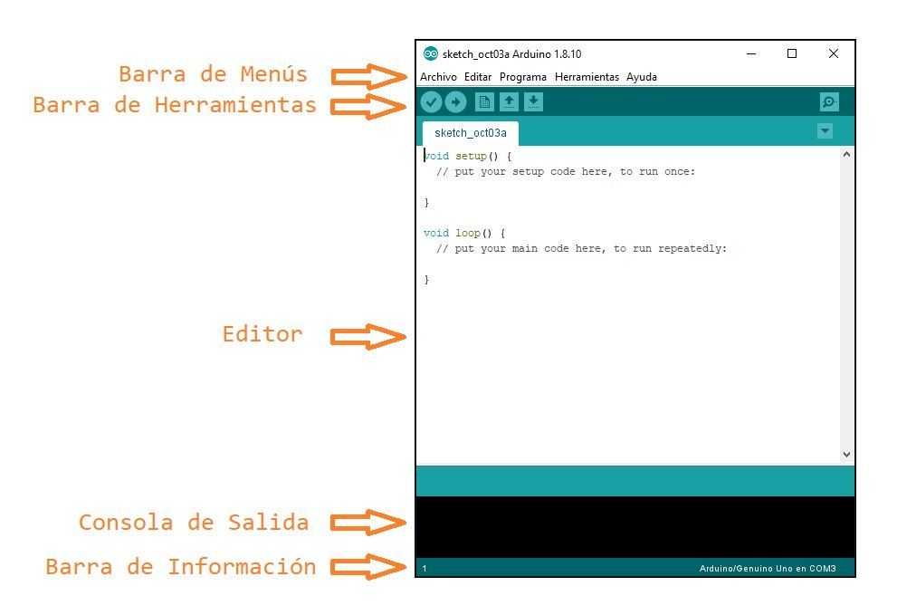

¿Qué es Arduino? 🤔
Imagina que quieres construir un robot, unas luces que reaccionen a la música o un sistema que riegue tus plantas automáticamente. Todos esos proyectos necesitan un cerebro que tome decisiones. Arduino es exactamente eso: un pequeño cerebro programable para tus proyectos de electrónica. La plataforma se divide en dos partes: el Hardware (la placa azul) y el Software (el IDE en tu computadora).
Anatomía de un Héroe: Partes del Arduino UNO
Tu placa Arduino UNO puede parecer compleja, pero cada parte tiene una función específica.
Diagrama del Arduino UNO
El Cerebro (Microcontrolador): El chip negro grande donde se ejecuta tu código.
Puerto USB: Por donde se comunica con la PC y recibe energía.
Pines Digitales (0-13): Como interruptores, solo entienden ENCENDIDO (HIGH) o APAGADO (LOW).
Pines Analógicos (A0-A5): Como perillas de volumen, leen un rango de valores (0-1023).
Pines de Alimentación: 5V, 3.3V, y GND (Tierra) para energizar tus componentes.
Tu Taller Digital: El IDE de Arduino
El IDE (Entorno de Desarrollo Integrado) es el programa en tu computadora donde escribimos, revisamos y enviamos el código a la placa.
Interfaz del IDE de Arduino
1. Verificar (✔️): El corrector ortográfico de tu código.
2. Subir (➡️): Envía tu código al cerebro del Arduino.
3. Área de Código: Donde escribes tus programas (sketches).
4. Consola de Mensajes: Te informa si hay errores.
5. Monitor Serie (🔍): Una ventana de chat para ver los datos que tu Arduino envía.
Menú rápido del IDE de Arduino

La Estructura de un Sketch: `setup()` y `loop()`
void setup() { ... }
Esta función es como la preparación antes de una fiesta. Se ejecuta una sola vez cuando el Arduino se enciende. Aquí ponemos todo lo que necesitamos configurar: qué pines serán entradas, cuáles serán salidas, etc.
void loop() { ... }
Esta función es la fiesta en sí. Una vez que el `setup()` termina, el código dentro del `loop()` se ejecuta una y otra vez, en un ciclo infinito. Aquí va toda la acción principal: leer sensores, tomar decisiones y controlar actuadores.